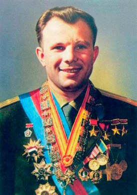
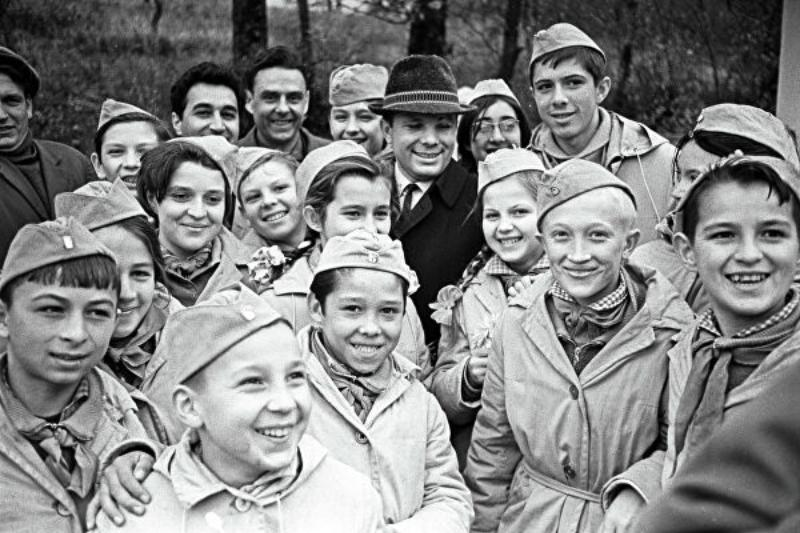

Ю́рий Алексе́евич Гага́рин (9 марта 1934,
Клушино, Гжатский (ныне Гагаринский) район, Западная область, СССР — 27 марта 1968, возле
села Новосёлово, Киржачский район, Владимирская область, СССР) — лётчик-космонавт СССР, Герой
Советского Союза, кавалер высших знаков отличия ряда государств, почётный гражданин многих
российских и зарубежных городов.Перейти к разделу «#Почётные звания и награды»
Полковник ВВС СССР (1963), военный лётчик 1-
го класса, заслуженный мастер спорта СССР (1961), член ЦК ВЛКСМ, депутат Верхов
ного Совета СССР 7-го и 8-го созывов.
12 апреля 1961 года Юрий Гагарин стал первым человеком в мировой истории,
совершившим полёт в космическое пространство[4][5]. Ракета-носитель «Восток» с кораблём
«Восток-1», на борту которого находился Гагарин, была запущена с космодрома Байконур,
расположенного в Кызыл-Ординской области Казахстана. После 108 минут полёта Гагарин успешно
приземлился в Саратовской области, неподалёку от Энгельса. 12 апреля 1962 года, день полёта
Юрия Гагарина в космос был объявлен праздником — Днём космонавтики.Перейти к разделу «#Полёт»
Первый космический полёт вызвал большой интерес во всём мире, а сам Юрий Гагарин
превратился в мировую знаменитость. По приглашениям зарубежных правительств и общественных
организаций он посетил около 30 стран[6].Перейти к разделу «#Зарубежные визиты» Много
у первого космонавта было поездок и внутри Советского Союза. В последующие годы Гагарин
вёл большую общественно-политическую работу, окончил Военно-воздушную инженерную академию
имени профессора Н. Е. Жуковского, работал в Центре подготовки космонавтов и готовился к новому
полёту в космос.Перейти к разделу «#Дальнейшая жизнь»
27 марта 1968 года Юрий Гагарин погиб в авиационной катастрофе вблизи деревни
Новосёлово Киржачского района Владимирской области, выполняя учебный полёт на самолёте МиГ-15УТИ
под руководством опытного инструктора В. С. Серёгина. Причины и обстоятельства авиакатастрофы
остаются не вполне выясненными до сегодняшнего дня.Перейти к разделу «#Гибель»
В связи с гибелью Гагарина в Советском Союзе был объявлен общенациональный траур
(впервые в истории СССР в память о человеке, не являвшемся главой государства).
В честь первого космонавта Земли был переименован ряд населённых пунктов (включая его родной
город — Гжатск), названы улицы и проспекты. В разных городах мира было установлено множество
памятников Гагарину.Перейти к разделу «#Память»
Юрий Алексеевич Гагарин является первым космонавтом земли (1934-1968 гг.). Он родился
9 марта 1934 г. городе Гжатске (ныне Гагарин) Смоленской области. Его мать, Анна Тимофеевна, и отец,
Алексей Иванович, были обычными сельскими тружениками из деревни Клушино Гжатского района.
(Источник информации - портал История.
Юбилейная медаль
Геро́й Сове́тского Сою́за
Орден Ленина
Юбилейная медаль «40 лет Вооружённых Сил СССР»
Классная квалификация военного лётчика
Герой Социалистического Труда
Орден «Звезда Республики Индонезии»
Орден Карла Маркса
Орден «За заслуги в воздухоплавании» (Бразилия)
Орден Клемента Готвальда
Герой Труда (Вьетнам)
ациональный орден «Плайя-Хирон»
Юрий Алексеевич довольно быстро переболел звездной болезнью, и все больше времени
стал уделять работе в Центре подготовки космонавтов. С 23 мая 1961 г. Гагарин – командир
отряда космонавтов. А уже осенью 1961 г. он поступил в Военно-воздушную инженерную академию имени
Н.Е. Жуковского, чтобы получить высшее образование. Последующие годы были очень напряженными в жизни
Гагарина. Много времени и сил отнимала работа по подготовке новых полетов в космос и учеба в Академии.
20 декабря 1963 г. Гагарин был назначен заместителем начальника Центра подготовки космонавтов. К летной
подготовке он вернулся в 1963 г., а к новому космическому полету стал готовиться летом 1966 г. В те
годы в Советском Союзе началась реализация «лунной программы». Одним из тех, кто стал готовиться к
полету на Луну, стал и Гагарин. Нетрудно догадаться, как ему хотелось первым отправиться к нашей
вечной спутнице. Но до этого было еще далеко. Пока было необходимо научить летать корабль «Союз».
Первый испытательный полет в пилотируемом варианте был намечен на апрель 1967 года.
К нему готовились Владимир Михайлович Комаров и Юрий Алексеевич Гагарин.
То, что основным пилотом корабля стал Комаров, совсем не означает,
что он был лучше подготовлен. Когда решался этот вопрос, Гагарина решили «поберечь»
и не рисковать его жизнью. Всем известно, чем закончился полет корабля «Союз–1». Выступая
на траурном митинге, посвященном памяти Владимира Комарова, его дублер Юрий Гагарин пообещал,
что космонавты научат летать «Союзы». В конце концов, так и произошло. Но сделано это было уже
без Юрия Гагарина.

Молодому человеку который обожал авиацию,
помог начальньк училища понявший что проблемы возникают из-за
небольшого роста Юры.Он предложыл студенту подложить под спину
подкладку чтобы лучше справлятся с посадками, и это ему помогло
СПАСИБО ЗА ВНИМАНИЕ!!!
А сейчас я оставлю ссылку на сайты откуда брал информацию...